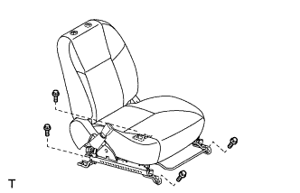
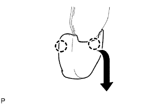
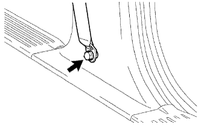
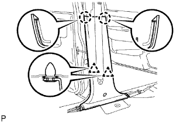
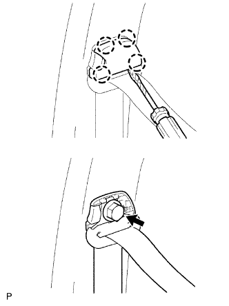
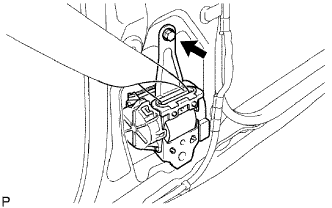
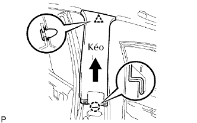
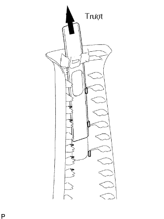
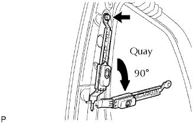

CỤM ĐAI BÊN NGOÀI GHẾ TRƯỚC > THÁO |
| 1. NGẮT CÁP ÂM RA KHỎI ẮC QUY |
| 2. THÁO CỤM GHẾ TRƯỚC TRÁI |
|  |
Nhấc tay điều chỉnh trượt ghế và trượt ghế đến vị trí sau nhất.
Tháo 2 bulông từ phía trước của ghế.
Nhấc tay điều chỉnh trượt ghế và trượt ghế đến vị trí trước nhất.
Tháo 2 bu lông ởø phía sau ghế.
Nhấc tay điều chỉnh trượt ghế và trượt ghế đến vị trí giữa. Hơn nữa, vận hành tay nhả bộ chỉnh nghiêng ghế và dịch chuyển lưng ghế đến vị trí thẳng.
w/ Hệ thống cảnh báo đai an toàn:
Tháo giắc nối phía dưới ghế.
Tháo ghế.
| 3. THÁO TẤM ỐP BẬU CỬA TRƯỚC TRÁI |
 |
Dùng một tô vít, nhả khớp 7 vấu.
Dùng một dụng cụ tháo kẹp, nhả khớp 3 kẹp và tháo tấm ốp bậu cửa.
| 4. THÁO GIOĂNG CỬA TRƯỚC TRÁI |
| 5. THÁO TẤM ỐP BẬU CỬA SAU TRÁI |
 |
Dùng một tô vít, nhả khớp 7 vấu.
Dùng một dụng cụ tháo kẹp, nhả khớp 3 kẹp và tháo tấm ốp bậu cửa.
| 6. THÁO GIOĂNG CỬA SAU TRÁI |
| 7. THÁO ỐP TRANG TRÍ TRỤ XE GIỮA PHÍA DƯỚI BÊN TRÁI |
|  |
Nhả khớp 2 vấu để tháo nắp của móc đai an toàn hông bên ngoài.
|  |
Tháo bulông gắn liên của móc treo ra khỏi trụ và tháo đai an toàn ngoài.
|  |
Dùng tôvít, nhả khớp 2 vấu.
Dùng dụng cụ tháo kẹp, tách 2 kẹp và tháo tấm ốp.
| 8. THÁO CỤM ĐAI NGOÀI GHẾ TRƯỚC TRÁI |
|  |
Dùng tôvít, nhả khớp 4 vấu và tháo nắp móc đai an toàn.
Tháo bulông của móc vai và tách đai an toàn ngoài.
|  |
Tháo bulông và đai an toàn ngoài.
| 9. THÁO ỐP TRANG TRÍ TRỤ XE GIỮA BÊN TRÁI |
|  |
Dùng dụng cụ tháo kẹp, tách kẹp .
Kéo tấm ốp trang trí theo hướng chỉ ra bởi mũi tên trong hình vẽ để nhả khớp vấu. Sau đó tháo tấm ốp.
| 10. THÁO NẮP CHE TẤM MÓC ĐAI VAI |
|  |
Trượt nắp lên trên và tháo nó ra khỏi tấm ốp.
| 11. THÁO BỘ ĐIỀU CHỈNH MÓC ĐAI VAI PHÍA TRƯỚC |
|  |
Tháo bulông.
Quay bộ điều chỉnh khoảng 90°, và sau đó kéo và tháo nó.